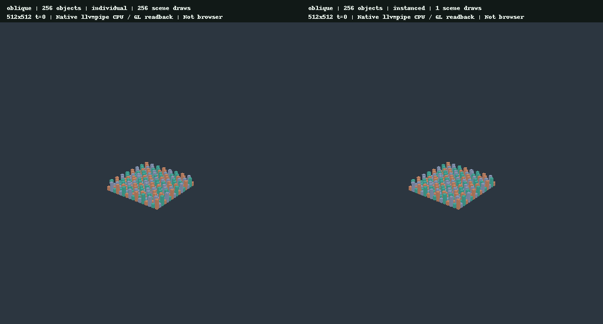
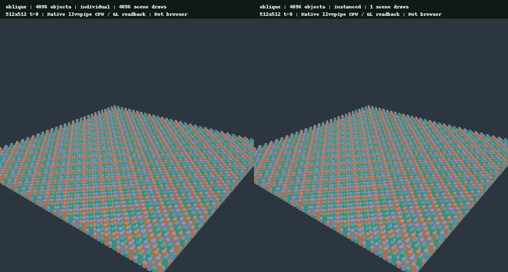
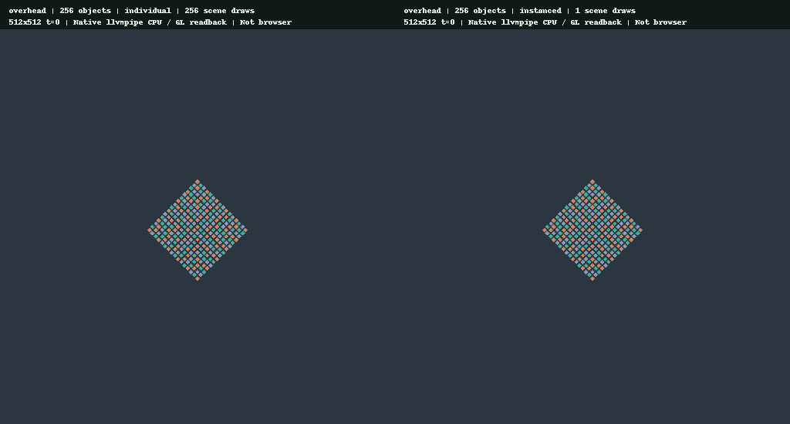
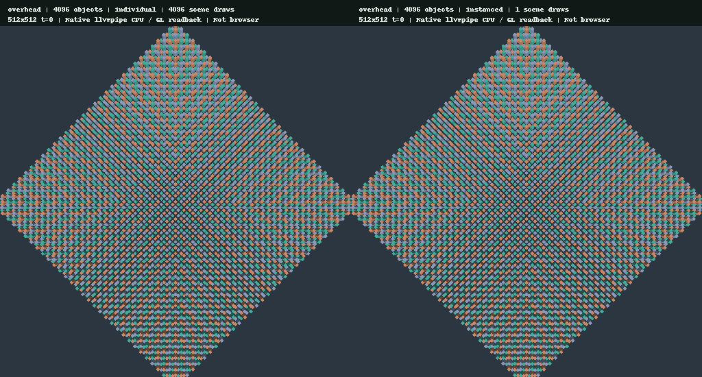

004 · 個別drawとinstancing
結果の要点
同じunit cubeから作った静的な箱・柱を、個別drawと1回のinstanced drawで描く。1・64・256・1024・4096個、2視点、計20条件で、各3repeat×30sample＝1800点を記録した。全条件・全repeatで両方式の512×512 RGB readbackがbit-exact一致した。
実行環境はMesa llvmpipeのCPU software rasterizer / GL。CPU encode、queue submit、blocking queue wait、その合計を分けたnative wall clockであり、hardware GPU timestampやブラウザーframe時間、Android実機性能ではない。draw削減がGPU workload削減や実機の高速化を意味するとは限らない。
同じ条件の実readback画像
左がindividual、右がinstanced。PNGはnative offscreen readback由来で、ブラウザーのスクリーンショットではない。両方式は同じshader、mesh、instance buffer、camera、material、depth、viewportを共有する。物体数を増やすとsquare spiralの外側へ追加され、既存物体のtransformは変わらない。object countはsubmitするinstance数で、計測した可視物体数ではない。cameraは固定のため大きなNでは画面端のclipや他物体による遮蔽がある。CPU側のfrustum/occlusion cullingは行っていない。
oblique / 256 objects

oblique / 4096 objects

overhead / 256 objects

overhead / 4096 objects

全20枚の個別PNGと、全10組の比較PNGを保存した。1個では同じ小さな物体1個だけを描く。1個条件はdraw削減がなく、短い処理時間ではtimer・driver・schedulerの揺れが差を占め得る対照条件である。
- 全条件の画像差JSON: 変化pixel数0、MAE0、最大channel差0。これは固定sceneのbyte一致検証で、別GPU・別driverまで一般化した画質保証ではない。
計測結果
各条件90点を直接poolした通常の中央値とnearest-rank p95。括弧は3repeatそれぞれの中央値の範囲。90点は独立した実機実験90回ではなく、信頼区間・統計的有意差は推定していない。
oblique
| objects | mode | scene draws | CPU encode median / p95 ms | submit median ms | queue wait median ms | total median / p95 ms |
|---|---|---|---|---|---|---|
| 1 | individual | 1 | 0.028 / 0.065 | 0.667 | 0.713 | 1.518 / 3.797 |
| 1 | instanced | 1 | 0.028 / 0.067 | 0.585 | 0.546 | 1.161 / 3.300 |
| 64 | individual | 64 | 0.031 / 0.048 | 0.606 | 0.435 | 1.072 / 1.290 |
| 64 | instanced | 1 | 0.023 / 0.043 | 0.630 | 0.484 | 1.155 / 2.616 |
| 256 | individual | 256 | 0.049 / 0.066 | 1.003 | 0.410 | 1.446 / 1.699 |
| 256 | instanced | 1 | 0.025 / 0.038 | 0.980 | 0.413 | 1.447 / 1.762 |
| 1024 | individual | 1024 | 0.080 / 0.124 | 2.171 | 0.403 | 2.672 / 3.614 |
| 1024 | instanced | 1 | 0.026 / 0.047 | 2.083 | 0.410 | 2.514 / 4.638 |
| 4096 | individual | 4096 | 0.270 / 0.381 | 7.950 | 0.438 | 8.653 / 10.050 |
| 4096 | instanced | 1 | 0.036 / 0.057 | 7.162 | 0.421 | 7.639 / 8.272 |
- 1個: instancedのCPU encode中央値はindividual比+0.3%、total中央値は-23.5%。totalのrepeat中央値範囲: individual 1.190〜2.026ms / instanced 0.939〜1.671ms。
- 64個: instancedのCPU encode中央値はindividual比-25.4%、total中央値は+7.8%。totalのrepeat中央値範囲: individual 1.013〜1.106ms / instanced 0.974〜1.464ms。
- 256個: instancedのCPU encode中央値はindividual比-50.1%、total中央値は+0.0%。totalのrepeat中央値範囲: individual 1.404〜1.526ms / instanced 1.393〜1.490ms。
- 1024個: instancedのCPU encode中央値はindividual比-67.2%、total中央値は-5.9%。totalのrepeat中央値範囲: individual 2.584〜2.986ms / instanced 2.407〜3.080ms。
- 4096個: instancedのCPU encode中央値はindividual比-86.6%、total中央値は-11.7%。totalのrepeat中央値範囲: individual 8.567〜8.852ms / instanced 7.480〜7.812ms。
overhead
| objects | mode | scene draws | CPU encode median / p95 ms | submit median ms | queue wait median ms | total median / p95 ms |
|---|---|---|---|---|---|---|
| 1 | individual | 1 | 0.022 / 0.034 | 0.385 | 0.404 | 0.810 / 0.878 |
| 1 | instanced | 1 | 0.022 / 0.028 | 0.380 | 0.384 | 0.798 / 0.958 |
| 64 | individual | 64 | 0.030 / 0.036 | 0.537 | 0.387 | 0.953 / 1.191 |
| 64 | instanced | 1 | 0.024 / 0.037 | 0.491 | 0.373 | 0.903 / 1.096 |
| 256 | individual | 256 | 0.049 / 0.068 | 0.767 | 0.392 | 1.215 / 1.429 |
| 256 | instanced | 1 | 0.025 / 0.030 | 0.735 | 0.376 | 1.151 / 1.373 |
| 1024 | individual | 1024 | 0.087 / 0.122 | 1.636 | 0.393 | 2.126 / 2.426 |
| 1024 | instanced | 1 | 0.025 / 0.043 | 1.477 | 0.409 | 1.906 / 2.266 |
| 4096 | individual | 4096 | 0.259 / 0.367 | 7.161 | 0.451 | 7.887 / 8.955 |
| 4096 | instanced | 1 | 0.033 / 0.050 | 6.364 | 0.415 | 6.835 / 8.189 |
- 1個: instancedのCPU encode中央値はindividual比+1.4%、total中央値は-1.4%。totalのrepeat中央値範囲: individual 0.799〜0.816ms / instanced 0.741〜0.819ms。
- 64個: instancedのCPU encode中央値はindividual比-21.9%、total中央値は-5.3%。totalのrepeat中央値範囲: individual 0.891〜1.011ms / instanced 0.871〜0.925ms。
- 256個: instancedのCPU encode中央値はindividual比-49.3%、total中央値は-5.2%。totalのrepeat中央値範囲: individual 1.186〜1.260ms / instanced 1.111〜1.182ms。
- 1024個: instancedのCPU encode中央値はindividual比-71.4%、total中央値は-10.3%。totalのrepeat中央値範囲: individual 2.096〜2.178ms / instanced 1.888〜1.931ms。
- 4096個: instancedのCPU encode中央値はindividual比-87.3%、total中央値は-13.3%。totalのrepeat中央値範囲: individual 7.671〜8.113ms / instanced 6.650〜7.071ms。
scene draw数はN→1だが、同じN個のmesh、三角形、fragment workloadを描く。CPU encodeの短縮は記録したrunに関する結果で、end-to-endの高速化を単独で証明しない。このrunでinstancedのtotal中央値がindividual以上だった条件: oblique/64、oblique/256。常にtotalが短縮するという結果ではない。特に1個ではdraw数・instance数が同じで、差は削減効果とは解釈しない。GPU-boundなscene、大きなfragment workload、透明物のsort、materialごとの分割、動的instance更新は別問題である。
方法・固定条件
- Adapter:
llvmpipe (LLVM 19.1.7, 256 bits)。Backend:Gl、device type:Cpu。 - Driver:
(empty driver name returned by adapter API)、driver info:4.5 (Core Profile) Mesa 25.0.7-2+deb13u1。 - Rust native release profile（debug_assertions=false）、
rustc 1.99.0 (b940084d7 2026-09-28)。releaseでもnative driver・CPU・queue構成はWeb版やhardware GPUと異なる。 - 表示・内部とも512×512、100%、t=0。Rgba8UnormSrgb color、Depth32Float、depth compare Less、depth write有効。同じback-face cullingとLambert shaderを使用。100%でも共通のlinear-light bilinear fullscreen display passを含む。
- oblique eye [8.2,6.8,10.5]、overhead eye [0.1,17,0.1]、target [0,0.6,0]、45° perspective、near0.1/far100。overheadの微小offsetは真上の特異点を避ける。
- unit cubeは24vertices・36indices・12triangles。各instanceはtranslation、非一様scale、colorのvec4×3＝48bytes。位置は間隔0.16の整数square spiral、幅0.11、高さ0.16または0.40、3色の固定palette。N個は先頭N件を使う。
- 初期化時に1組のgeometry buffersを確保し、4096件×48bytes＝196608bytes（192KiB）のinstance dataを1度だけuploadする。個別drawも同じinstance vertex bufferを使い、draw_indexed(0..36, 0, i..i+1)のfirst_instanceで行を選ぶ。instancedはdraw_indexed(0..36, 0, 0..N)を1回発行する。両方式ともscene pass1回、別のdisplay pass1draw。
- 個別drawごとのuniform書き込みやqueue.write_bufferはない。全方式・全countのper-frame instance uploadは0bytes。Nを変えても固定196608bytesのbufferは再確保しない。初期化upload量と毎frame upload量を混同しない。動的sceneでのupdate/copy bandwidthは今回の測定に含まれない。
- 各方式・repeat前に10frame warmup、30frame計測、3repeat。視点はoblique→overhead、個数は1→64→256→1024→4096。repeat0と2はindividual→instanced、repeat1はinstanced→individual。奇数repeat数なので順序は完全均等ではない。ランダム化・thermal統制・外部CPU負荷統制は行っていない。
- encode計測はencoder作成・render pass記録・finishまで。submitを別区間に分け、当該submissionのblocking queue完了waitをさらに別記録。それら3区間の和がtotal。llvmpipeはCPUで描画を実行し、submit区間にもdriver/実行処理が含まれ得るため、encodeだけを全CPU負荷とは呼ばない。command encoderやdriver内部のallocationは含み得る。readback、画像保存、固定geometry/target/uniform allocation、pipeline作成は計測外。
- nativeは1sceneと1display pass、camera uniformを初期化時に設定し各submit後に完了waitする。Web A/B同時表示は2pane、毎frame uniform更新、surface acquire/present、rAF、非同期queueで構成が異なる。共有scene encoderは描画経路の検証に役立つが、このnative値をWeb版A/Bのframe時間とは呼ばない。
- hardware GPU timestamp、Android/desktop hardware、実ブラウザーでのWebGPU操作・performanceはこのnative runでは未確認。専用GPUでのdraw-call overhead、GPU utilization、overdraw、instance memory fetchの内訳は測っていない。
再現と検証
Python3.11以上とPillowが必要。input相対pathはrepository root基準。実測値の穴埋めや既存summaryの再利用はしない。
RENDERING_LAB_INSTANCING_OUTPUT="$PWD/evidence/instancing" cargo test --locked --release -p rendering-core --test instancing_smoke -- --ignored --nocapture
python3 scripts/build-instancing-evidence.py --input evidence/instancing
python3 scripts/build-instancing-evidence.py --self-test
python3 scripts/build-instancing-evidence.py --checkgeneratorは20条件・60repeat群・1800点、CSV header、sample順序、重複/欠落、寸法、draw/pass数、buffer/毎frame upload bytes、有限かつ非負timingと合計、camera/adapter/計測条件、画像寸法・RGB形式・byte一致を検査する。--checkは本文・30PNG・5run filesの36生成ファイルを一時領域で再生成してbyte比較する。PNGのbyte再現には同じPillow/zlib環境が必要。source-snapshotは別記録のため再生成・上書きしない。
追加の回帰検証は表示511×319、内部75%＝383×239・50%＝256×160、2視点、1/4096個の8組（16readback）で両方式のbyte一致を確認した。projectionは端数丸めされた内部寸法ではなく元のdisplay aspectから設定する。これらは1800点のtiming matrixへ混ぜていない。
--self-testは一時領域の明示的な人工fixtureだけを使用し、正常入力、中央値/p95、欠落・重複・不明条件・順序違い・不正寸法/draw/upload量・非有限/負timing・合計不一致・metadata/image不一致・出力破損・余分なファイルを検査する。人工fixtureは実測evidenceやreportへ保存しない。
実行対象source snapshotはworking tree modified=trueとしてSHA256を保存する。base commitだけを新しいinstancing実装の検証対象とは扱わない。
次の判断
この証拠は静的な同一meshのcommand batchingとnative readback一致を確認する。実機でGPU timestampとCPU frame時間を分け、少数object、GPU-bound workload、複数material、毎frame instance更新を別条件で検証してから採用範囲を判断する。Androidやブラウザーで一律に高速化すると結論しない。